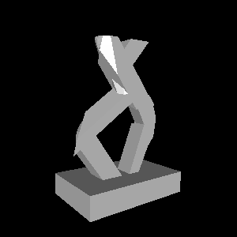
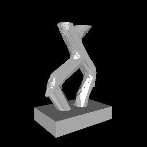
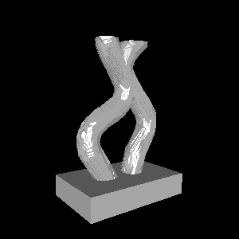
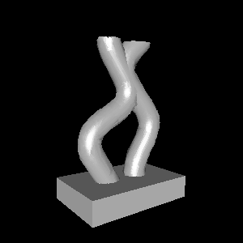
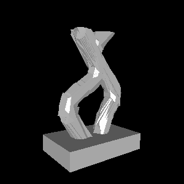
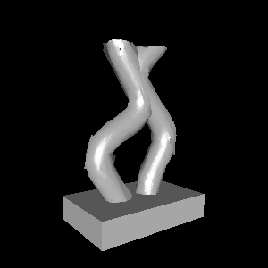

As a hobby project over the past few months, I’ve been exploring a new way to represent 3D models. There are already plenty of 3D representations—from polygon meshes to neural radiance fields—but each option has its own set of trade-offs: some are more efficient to render, some are easier to modify, and some are cheaper to store. My goal with this project was to explore a new option with a new set of trade-offs.
The technique I will describe is storage-efficient, supports real-time rendering, and allows straightforward shape simplification. While the method isn’t suitable for every application, I can imagine scenarios where it could be useful. Either way, I think it could make a good addition to any 3D developer’s toolbox, or at least lead to other interesting ideas.
Representing Shapes as Decision Trees
The crux of this project is to represent 3D occupancy functions as oblique decision trees. It’s totally okay if you don’t understand what this means yet! I’ll break it down in this section, starting by describing decision trees in general, and then moving towards my specific method. You may want to skip this section if you are already familiar with occupancy functions and oblique decision trees.
In general, a decision tree takes an input and makes a prediction based on attributes of this input. For example, here’s a decision tree which predicts whether or not I will eat a given piece of food:
In this case, a food item is the input, and the output is a prediction “yes” or “no”. To make a decision, we start at the top (“Is it sweet?”) and follow the left or right arrow depending on the answer to this question. We repeat this process until we end up at a leaf (one of the triangles) which contains the final prediction. We refer to the yellow boxes as branches, since they branch off into multiple paths.
This picture might look intuitive, but what does it have to do with 3D shapes? To understand the answer, you might have to change how you think about shapes in general. We typically describe shapes by composing other shapes. For example, you might say that a person has a spherical head at the top, a wide rectangular torso underneath, and then two long cylindrical legs. However, you can also define a shape as an answer to the question “is this point inside the shape?” for every point in space. For example, a circle can be defined as every point \((x, y)\) such that \(x^2 + y^2 <= 1\). This is called an occupancy function, and it looks more like something we could do with a tree. In this setup, the input to the tree is a coordinate, and the output is a boolean (true or false) indicating whether or not the coordinate is contained within the shape.
To give a simple concrete example, let’s try to represent a 2-dimensional unit square as a decision tree. The input will be an \((x, y)\) coordinate and the output will be true or false. But what will the branches look like? Thinking back to the food example, we were able to ask questions about the food item, such as “Is it sweet?”. What kinds of yes/no questions can we ask about an \((x, y)\) coordinate? For now, let’s restrict ourselves to inequalities along a single axis. With this in mind, we might arrive at the following tree:
This tree might seem more complicated than it needs to be, due to our restriction on the types of branches we can use. In particular, we needed four branches just to express this simple function, while the whole tree could be reduced to a single branch with the predicate
$$(-1 <= x <= 1) \land (-1 <= y <= 1)$$
However, we’ll find later on that restricting the space of allowed branches makes these trees easier to render. More broadly, though, the power of decision trees is that their individual branches can be simple, but multiple steps of branching can lead to complex behavior.
With that being said, we will make our branches a little more powerful. In particular, we will use oblique decision trees, where the decision at each branch is based on a linear inequality of the input coordinates. In three dimensions, this means that each branch is of the form \(ax + by + cz < w\) where \(a, b, c\), and \(w\) are free variables. Geometrically, each branch divides the space across a plane, and \(<a, b, c>\) is the normal direction of the plane.
Why Decision Trees?
Perhaps the nicest property of decision trees is that they can make predictions quickly. For example, consider the game “20 questions”, where a decision tree that can identify any object with just 20 branches. This could be a really nice property for a 3D representation, especially for tasks like rendering and collision detection that we want to perform in real time.
Another nice property of decision trees is that they tend to be pretty small. Unlike neural networks, which are typically trained as large, fixed pools of parameters, decision trees can adapt their structure to the underlying data. In the context of 3D representations, this might mean that our trees could automatically adapt their size and complexity to each 3D shape. This sounds like a great way to save space for video games or other 3D-heavy applications!
Despite these benefits, pure decision trees aren’t very popular in machine learning because they are prone to overfitting (note that decision trees are still popular, but they are typically used in ensembles). Overfitting means that, while a tree might perfectly fit the set of examples it was built for, it might not generalize well to new unseen examples. While overfitting might be an issue in machine learning, it’s actually a good feature for representing 3D shapes. If we already know the shape we want to represent, we can create an infinite dataset of input points and corresponding outputs. We need not worry about overfitting—all we care about is fitting the (infinite) training data with a small, efficient tree.
Building Decision Trees
Even if decision trees are a reasonable way to represent 3D shapes, I doubt 3D artists would want to manually write out hundreds of decision branches to describe an object. Ideally, we would like to automatically create decision trees from known, existing 3D shapes. Luckily, there are many popular algorithms that are easy to adapt to this use case. In this project, I build on two such algorithms:
- ID3 builds decision trees greedily, starting at the root node and working from the top down. In this algorithm, we create a branch by measuring the entropy of all possible splits, and choose the split with the most information gain.
- Tree Alternating Optimization (TAO) refines a tree by optimizing each branch using a linear classification technique like support vector machines. This is a relatively new approach, and its main benefit is that it can help find better split directions for oblique decision trees.
Both of these approaches require a dataset of input-output pairs. Luckily, if we already have a known 3D model that we would like to encode as a tree, it is trivial to generate such a dataset. All we need to do is sample random points in space and evaluate whether each point is inside the 3D model. I encoded existing triangle meshes in all of my experiments, so I was able to use my model3d framework to detect whether points were inside or outside of the meshes.
Unlike in most machine learning scenarios, here we have the unique opportunity to leverage an infinite dataset. To make ID3 and TAO leverage infinite data, we can sample more data whenever it is “running low”. For example, we might start ID3 with 50,000 examples, but after making eight splits, we will be in a subspace where there are only \(50,000/2^8 = 195\) examples on average from this initial dataset. Whenever we don’t have enough examples to confidently keep building a sub-tree, we can sample more points in the current branch. In an oblique decision tree, the subspace of points that end up at a particular branch is defined by a convex polytope, and we can sample new points inside this polytope using a hit-and-run method. We can use a similar approach for TAO to ensure there are always enough examples to get a reasonable fit at every level of the tree.
Decision trees are often applied to categorical feature spaces where there are a small number of possible values for each feature. Our 3D case is very different, since we only have three dimensions, but we want to consider an infinite number of splits (i.e. all possible directions). For ID3, we have no choice but to explore a finite subset of these directions. In my code, I opted to use the vertices of an icosphere to get a fairly uniform set of directions to search over. After greedily selecting an optimal direction from this set, my ID3 implementation then generates a set of mutated directions and also searches this narrower set. This way, we can explore a large but finite space of directions when building the tree. Luckily, TAO comes to the rescue even further by allowing us to refine the tree using a continuous optimization method like gradient descent. This way, we can technically find any split direction, not just one choice from a finite set of options.
Real-time Rendering
So now we can create trees from arbitrary 3D models, but so far we have no way to visualize what we have created. What we really want to do is render the 3D object as an image, ideally fast enough that we could even create videos of the object in real time. In this section, I’ll show that we can, in fact, render our decision trees efficiently. This will also let us see, for the first time, what we can actually represent with this approach.
Before I implemented efficient tree rendering, I used a more naive approach to make sure my tree learning algorithms were working correctly. Since our decision trees represent a field of occupancy values, we can turn the tree back into a triangle mesh using a method like marching cubes, and then render this mesh using a standard rendering pipeline. This was great for quick prototyping and debugging, but it was expensive to run and often missed fine details and edges of the surface. Moreover, this approach defeats the purpose of representing the 3D model as a tree in the first place—we might as well have stuck with meshes!
Fortunately, there is another way to render our trees without ever converting them into a different representation. This technique is based on ray casting, where each pixel in the rendered image corresponds to a different linear ray shooting out from the camera. In particular, each ray starts at the camera origin \(\vec{o}\), and shoots in a direction \(\vec{d}\) that is specific to this pixel. We can represent this ray as a function \(\vec{r}(t) = \vec{o}+t\vec{d}\) where \(t \ge 0\) increases as we move farther from the camera along the ray. If the ray hits the object, we can then figure out what color the corresponding pixel should be from properties of the object’s surface at the point of collision. If the ray misses the object and shoots off into infinity, then the pixel is transparent.
To use ray casting, we just need to figure out where a ray collides with our decision tree. A naive approach would be to start at \(t=0\) and gradually increase \(t\) by small increments while repeatedly checking if the tree returns true at the point \(\vec{r}(t)\). However, this approach would be expensive, and it’s possible we could completely miss an intersection if we took too large of a step. Really, this approach is completely dependent on how much we increase \(t\) as we cast the ray. On one hand, we don’t want to take too small of a step: it would be inefficient to keep increasing \(t\) by 0.001 if none of the decision branches will change until \(t\) is increased by 0.1. On the other hand, we don’t want to completely miss collisions: it would be bad to increase \(t\) by 0.1 if a collision will occur after an increase of only 0.001.
Luckily, we can actually calculate the exact \(t\) increment that would result in the next decision branch of the tree changing. In particular, whenever we evaluate the the tree at a point \(\vec{r}(t)\), we follow a series of linear decision branches to get to a leaf node with a constant boolean value. We can then calculate the smallest \(\Delta t\) such that \(\vec{r}(t+\Delta t)\) will arrive at a different leaf node. To see how, consider that each branch of our tree decides which sub-tree to evaluate based on a linear inequality \(\vec{a} \cdot \vec{x} \ge b\), where \(\vec{a}\) is the axis of the split, \(b\) is the threshold, and \(\vec{x}\) is the point we are evaluating. This branch will be on the brink of changing at any point \(\vec{x_1}\) where \(\vec{a} \cdot \vec{x_1} = b\). Therefore, if we want to know the \(t\) where the ray will shoot across the decision boundary, we simply need to solve the equation
\(b = \vec{a} \cdot \vec{r}(t) = \vec{a} \cdot (\vec{o} + \vec{d}t) = \vec{a} \cdot \vec{o} + t(\vec{a} \cdot \vec{d})\)
Re-arranging terms, this gives
\(t=\frac{b – \vec{a} \cdot \vec{o}}{\vec{a} \cdot \vec{d}}\)
When we evaluate the tree at a point along the ray, we can also compute this value for every branch we follow; this allows us to figure out the next \(t\) that we should check for a collision. Sometimes, a branch will yield a solution for \(t\) that is before the current \(t\), in which case this branch will never change again and we do not have to worry about it. It’s also possible that \(\vec{a} \cdot \vec{d} = 0\), in which case the ray is parallel to the decision boundary, and we can likewise ignore the branch.
One last detail is that we need to know the surface normal of the object in order to render a point that collides with it. By definition, the normal at a point on a surface is the direction perpendicular to the surface at that point. In other words, at a collision point, if we move in a direction perpendicular to the normal, then we should remain on the surface. Conveniently, this is given exactly by the direction \(\vec{a}/||\vec{a}||^2\) where \(\vec{a}\) is the axis of the last branch of the tree that changed before a collision.
With all of these ideas in place, we can now efficiently render a tree. As a simple test case, let’s look at this 3D model, which I previously created as a triangle mesh:
I created a tree from this 3D model with approximately 40 thousand leaves. Let’s try rendering the same panning rotation as above, but using our ray casting algorithm directly on the tree:
The good news is that the rendering algorithm is fast: this animation was rendered in less than a second on my laptop. The bad news is that the rendered surface looks really rough. We will fix this roughness in the next section, but for now let’s talk a little bit more about efficiency.
The runtime of the ray casting algorithm is theoretically bounded by the number of branches in the tree. In the worst case, it’s possible that a ray intersects every branch of the tree in order, which would be quite expensive and would make real-time rendering impossible. However, I’ve found in practice that rays only end up intersecting a handful of branches on average, and that the number of intersections is almost zero for most pixels in a rendered image. To visualize this effect, we can look at a cost heatmap to see which rays are the most expensive to cast:
Intuitively, it looks like the most expensive rays to render are the ones near the surface of the object, while it is cheap to render rays far from the surface or near simple (flat) parts of the object.
Smoothing Things Out with Normal Maps
In the renders I just showed, the surface of the tree looks really rough. This is because, even though the tree captures the overall shape of the object quite well, it is not very accurate near the surface. This results in inaccurate and noisy normals, which in turn causes inaccurate lighting. We could try to combat this by fitting a better tree, but there is another neat solution that takes inspiration from normal mapping in computer graphics.
To obtain more accurate (and smoother) normals on the surface of our tree, we can fit another tree that predicts the normal at each surface point. This normal map tree takes a 3D coordinate and predicts a unit vector in each leaf node. To create this tree, we first gather a dataset of input-output pairs by sampling points on the surface of the ground-truth 3D model. We can then use a greedy method similar to ID3 to build the resulting tree, and we can further refine it with TAO.
When rendering our original tree, we can now replace our normal estimate \(\vec{a}/||\vec{a}||^2\) with the direction predicted by the normal map. This can significantly smooth out the resulting renders:
Note that the actual outline of the shape did not change; the only difference is the lighting on the surface. Furthermore, because we only evaluate the normal map once per pixel, it introduces almost no additional rendering cost.
One drawback of the above approach is that there are only a finite number of leaves in our normal map. For example, if the normal map only has 50 leaves, then you might imagine that our resulting renders would only be able to show 50 different shades of gray. This is certainly a limitation of using a single tree to represent normal maps, so I explored one potential way to bypass this problem.
In typical machine learning settings, we don’t just fit a single tree to a dataset. Instead, we fit an ensemble of trees whose outputs are summed together to obtain a final prediction. For normal maps, I explored a particular approach known as gradient boosting. In this approach, we first fit a single tree \(f_0\) to our dataset of inputs \(x_i\) and corresponding ground-truth outputs \(y_i\), giving predictions \(f_0(x_i)\). We can now fit a new tree \(f_1(x_i)\) to predict the residual \(y_i – f(x_i)\). Intuitively, if we add the two outputs, \(f_0(x_i) + f_1(x_i)\), we will get a better prediction than just using \(f_0(x_i)\). We can iterate this process as many times as we want, getting a better and better prediction by summing together more and more trees.
The nice thing about an ensemble is that there is a combinatorial explosion of possible output values. If the first and second trees both have 50 leaves, then there are up to \(50^2\) distinct outputs that the ensemble could produce. This seems like a nice benefit of this approach, but does it actually help in practice?
Instead of ensembling multiple trees together, we could also just use a single, deeper tree. So which approach is actually better? To understand the trade-off, we can train ensembles of various depths, and plot some estimate of accuracy against an estimate of complexity. To measure accuracy, I use cosine distance between the predicted and true normals on a held-out test set. To measure complexity, I measure file size using a binary serialization format. With all this in place, we can get the following plot:
From this plot, it actually looks like using single, deeper trees is better than using an ensemble. I found this a bit disappointing, although it still tells us a useful piece of information. Essentially, if we want to store the normals as accurately as possible for a given file size, we should fit a single tree and tune the depth of this tree. One caveat with this result is that I only produced this plot using a single 3D model. It’s always possible that other 3D models could still benefit from ensembles of normal maps.
Saving Space and Time with Tree Simplification
Something I hinted at in the previous section is that we might care about file size. I claimed earlier that decision trees are good at compactly representing complex functions, but I haven’t actually proven this yet. The first tree I built in the above examples was pretty huge, totaling 39,101 leaves. When encoded in a simple 32-bit binary format, this comes to a whopping 1.25 megabytes!
Luckily, we have a few options for obtaining smaller, more compact trees. No matter what we do, we will lose some details of the 3D shape, but our goal is to obtain a much smaller tree that still captures the crucial details of the 3D object as much as possible.
One of the simplest ways to build smaller trees is to limit the maximum depth, where depth is defined as the number of branches it takes to reach a leaf node. Limiting the depth to \(D\) effectively limits the number of leaves to \(2^D\). In the table below, I render trees built with various maximum depths. I also report the actual number of leaves in the resulting trees, which is typically less than \(2^D\) since ID3 and TAO avoid unhelpful branches.
| Depth | # leaves | Rendering of tree |
| 8 | 52 | |
| 10 | 102 |  |
| 12 | 516 | |
| 14 | 853 |  |
| 15 | 2,490 |
While these trees are a lot smaller than the original, they do lose a lot of detail, suggesting that we should explore other approaches. After all, depth isn’t really what we care about. We want to minimize the number of leaves, but a tree can be very deep while only having a handful of leaves—just think back to our 2D square example where most branches only had one sub-branch.
Instead of trying to build a smaller tree from scratch, what if we instead take an existing large tree and simplify it? In the dumbest form, we could repeatedly replace random branches of the tree with one of their children until the tree is small enough. However, we don’t want to just delete random parts of the tree; instead, we want to remove parts of the tree that are the least helpful.
While simplifying a tree might sound difficult, even the simplest greedy approach actually works pretty well. In particular, we consider a space of possible “deletions”—branches that we can replace with one of their children. For each possible deletion, we can measure how accurate the resulting tree would be on a dataset of input-output pairs. Finally, we can pick the deletion that results in the highest accuracy. If we repeat this process until our tree is small enough, the accuracy of the tree gradually gets worse, but we end up deleting unhelpful parts of the tree first.
Compared to limiting the depth, simplifying a large tree ends up producing much better results. For the 3D model I’ve been using in my examples, we can probably even get away with 512 leaves, which translates to roughly 16KB in a simple binary format. Here is what we get when simplifying our initially large tree:
| # leaves | No normals | With normal map |
| 39,101 | ||
| 2,047 | ||
| 1,023 |  | |
| 512 |  | |
| 256 |  |  |
Limitations
While tree representations are cheap to render, easy to simplify, and efficient to store, the trees themselves are expensive to create. My implementation of ID3 and TAO takes minutes—or even hours—to build a new, high-resolution tree from an existing mesh. I suspect that there are clever ways to make this more efficient, but it wasn’t my main focus for this project. The cost and difficulty of creating trees from existing 3D models is probably the biggest current limitation of this approach.
When I first rendered a tree, I was really surprised by how bad the predicted normals were. In comparison, triangle meshes tend to produce much more reasonable normals, even at pretty low polygon counts. I suspect that this issue could be caused by my particular method of building trees. Because I use ID3, which searches for split directions in a finite space, it is difficult for decision branches to capture surface normals accurately. TAO probably can’t always come to the rescue either, since it’s hard to completely re-build a tree from the top down once it’s very deep. As a result, we end up with jagged regions that would probably be unnecessary if an earlier split had used the perfect normal direction in the first place.
One missing feature of 3D tree representations is UV mapping. For triangle meshes, it is relatively easy to map images onto the surface of the shape, allowing efficient storage of textures, normal maps, and other surface information. Since my tree formulation does not directly represent the surface of an object (but rather the entire volume), it is less obvious how to encode high-resolution details of the surface. Even for normal maps, which I did attempt to tackle, I didn’t store the normal map as a 2D image; instead, I had to store it as a 3D field that is only evaluated on or near the surface of the object. This might end up being okay, but it means that we have to encode textures and other surface information as their own trees (or ensembles).
Conclusion
I hope you found this interesting! If you would like to explore these ideas more, the code for this project is available on Github. I’ve also created a web demo for viewing trees in real time. This demo allows you to pan around a few example models, toggle normal maps, and visualize rendering cost. And yes, this does mean I was able to implement tree rendering efficiently in pure JavaScript!